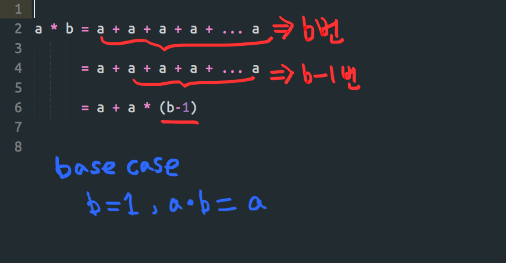
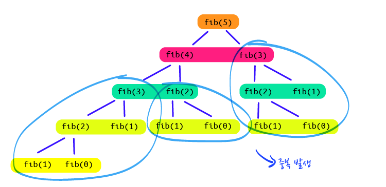
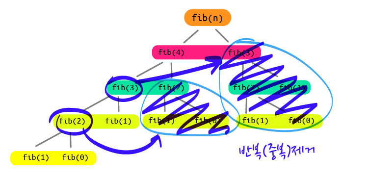
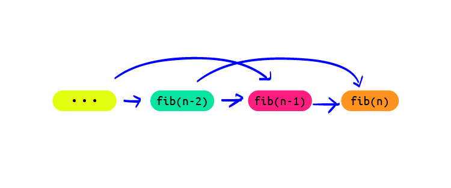

Recursion & DP
Feb 16, 2018 00:00 · 1701 words · 4 minute read
Recursion and DP
알고리즘 과제를 풀다가 알게된 recursion에 대해 공부해 보았다. 나아가 Recursion과 함께 나오는 Dynamic Programming(DP)에 대해서도 알아보자.
What is Recursion?
- 재귀, 귀납
- 자신을 정의할 때 자기 자신을 재참조하는 방법
- 문제를 작은 부분으로 쪼개서 그 부분의 해결에 의해서 전체를 해결하는 방법
Recursion은 어릴때 봤던 러시아 인형처럼 큰 인형에서 계속해서 작은 버젼의 인형이 더이상 작아질 수 없을 때까지 나오는 그런 것과 비슷한? 개념이다.
대부분의 컴퓨터 프로그래밍 언어는 자기 자신을 호출 수 있는 재귀를 허용 한다. 일반적인 접근 방법은, 전체 문제를 그 문제와 같은 방식의 작은 ‘sub-problem’으로 나눈다. 이렇게 나눈 ‘sub-problem’을 해결하고 그 해결 결과들을 합친다.
Dynamic Programming?
- 수학자 Richard Bellman에 의해 사용되기 시작한 용어
- 주어진 문제를 풀기 위해서, 여러개의 ‘sub problem’으로 나누어 풀고 그 결과를 결합하여 최종 문제를 해결하는 것이다.
- ‘sub problem’의 해결 결과를 저장하여 재사용함으로써 반복 계산 횟수를 줄인다.
- Overlapping Sub-problem, Optimal Substructure 특징을 가진다.
- Divide-and-conquer와 비슷하지만 DP는 기억과 재사용 이라는 특징이 있다.
Recursion function 만들기
- 한개이상의 base case와 recursive case를 가지고 있다.
- Base case는 더이상 반복하지 않고(재귀하지 않고) 결과를 내게 하는 일종의 함수가 끝나는 지점 혹은 영어로는 ‘terminating case’ 를 정의하는 부분
- Recursive case는 반복적으로 수행할 연산을 정의하는 부분, 작은 단위로 쪼개는 것
Multiplication 문제 풀기
- a 를 b번 만큼 반복해서 더하는 함수 만들기
- a + a + a + a … a = a * b
- Iteration(반복문)과 Recursion(재귀)를 이용해 해결하기
Iterative Solution
- for loop 이나 while 반복문을 사용한 해결
// a를 b번 만큼 반복해서 더해라
function mult_iter(a, b) {
var result = 0;
while (b > 0) {
result += a;
b--;
}
return result;
}
mult_iter(5, 3);
// 5 + 5 + 5 = 15
Recursive Solution

function mult(a, b) {
if (b === 1) return a;
return a + mult(a, b-1);
}
mult(5, 3);
// 15
Fibonacci 문제 풀기
- 피보나치 수는 0과 1로 시작하며, 다음 피보나치 수는 바로 앞의 두 수의 합이 된다.
- n의 피보나치수는 (n-1)의 피보나치수 + (n-2)의 피보나치수와 같다
- seed value : 1,2일때 결과값은 1이다. (f(2)는 f(1)과 같으므로)
- 다양한 방법으로 피보나치 수를 구하는 함수를 만들어 보자.
Naive Recursive Solution
- 반복적인 Recursion을 사용하는 해결방법은 시간복잡도가 높아지는 단점이 있다.

fib(n) {
if (n <= 2) return 1;
// base case
return fib(n-1) + fib(n-2);
// recursive case
}
Memoized Dynamic Programming 이용해 문제 풀기
- 위의 해결방법은 recursion내에서 겹치는 부분이 발생한다.
- 겹치는 부분을 dictionary에 저장해 놓고 가져다 쓴다
- Memoization 혹은 Top Down 이라고 한다.
- top-down : 문제를 작은문제 로 나누고, 작은 문제 해결법을 바탕으로 큰 문제를 푼다,
- DP = recursion + memoization

function fib(n, memo) {
var result;
memo = memo || {};
// make an empty dictionary called memo
if (memo[n]) return memo[n];
if (n <= 2) return 1;
result = fib(n-1, memo) + fib(n-2, memo);
memo[n] = result;
return result;
}
fib(k)는 오직 처음 호출 되었을때만 recursion 발생한다. (그 다음부터는 저장값을 사용)- 오직 n개의 기억되지 않은 호출이 발생한다.(non-memoized call)
- memoize 기억하고 sub-problem의 결과를 재사용
- 시간 = sub-problem의 수 * 한개의 sub-problem 시간
Bottom-up Dynamic Programming 이용한 해결방법
- 작은 문제부터 차례대로 푼다
- 문제를 늘려가면서 풀다보면 큰 문제를 해결할 수 있게 된다.
function fib(n) {
var table = [0,1];
for (var i = 2; i <= n; i++) {
table[i] = table[i-1] + table[i-2]
}
return table[n];
}
- memoized DP와 동일한 컴퓨테이션
- recursion이 없으므로 더 빠르다
- fibonacci의 0, 1부터 풀기 시작 (+기억)

알고리즘에 대해 찾아보면 온통 전문적이고 nerdy하고 칙칙한 정보들이 많아서 이해하고 정리하는데 오랜 시간이 걸렸다. 하나를 공부하면 꼬리에 꼬리를 물고 계속 연관된 새로운 것들이 나타나서 더 오래 걸렸지만, 조금이나마 이전에 배웠던 부분들이 언급될 때는 작은 아하! 순간들을 경험하기도 했다. 모든지 나만의 언어로 정리하는게 가장 훌륭한 복습방법이라는 생각이 들었다. 아직은 새롭게 배워야 할 것들이 너무 많지만 언젠간 나도 나만의 dictionary에 많은 정보들이 쌓이리라 생각하며…
추천 참고 링크
MIT 6.0001, 6.002는 어렵지만 한 5-6번정도 반복해서 봤더니 큰 도움이 되었다.(6.0001이 입문단계) 그리고 알고리즘등에 대해 예쁘게 알기쉽게 설명한 미디엄 포스트도 추천한다.